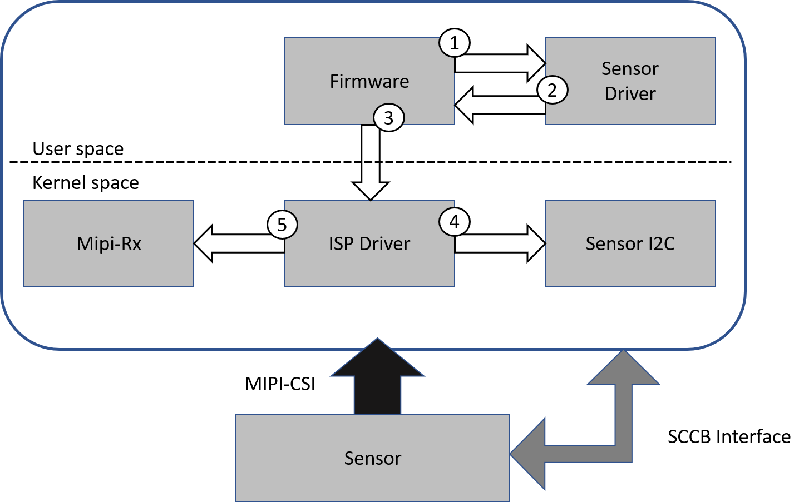

9. Complete Other Functions¶
9.1. SensorInitializeflow¶
the corresponding contentAE/ISPthe corresponding content，SensorDriverthe corresponding contentuseOthercallbacksthe corresponding contentInitializeflow。
Sensor callbacksthe corresponding contentParameterthe corresponding content，the corresponding contentNotethe corresponding content。
recommendthe corresponding contentflowas follows：
{kind=link}
Pre-Initthe corresponding contentSensorDriverthe corresponding contentenvironment，the corresponding contentcallbackas follows：
pfnSetInit： Initializesensorthe corresponding contentParameter。enGainModethe corresponding contentsensorthe corresponding contentWDRmodethe corresponding contentGainthe corresponding content。
pfnSetBusInfo： the corresponding contentI2Cinformation。
pfnRegisterCallback： the corresponding contentsensor ISP/AE callbacks。
pfn_cmos_sensor_global_init： InitializesensorDriverthe corresponding contentParameter。
Set Modethe corresponding contentSensorOutputthe corresponding contentmainlyformat，the corresponding contentcallbackas follows：
pfn_cmos_set_image_mode： the corresponding contentOutputthe corresponding contentimageformat。
pfn_cmos_set_wdr_mode： the corresponding contentlinearthe corresponding contentWDRmode。
Set User Defaultthe corresponding contentInitializethe corresponding contentAEParameter，the corresponding contentcallbackas follows：
pfn_cmos_fps_set： the corresponding contentFramethe corresponding content。the corresponding contentcallback pfn_cmos_get_ae_defaultthe corresponding contentFramethe corresponding contentf32Fps，Notethe corresponding contentFramethe corresponding contentDefault Value。
pfn_cmos_inttime_update： the corresponding contentExposureTimethe corresponding content AE，
linearmodethe corresponding contentExposurethe corresponding contentrangecanthe corresponding contentpfn_cmos_get_ae_defaultthe corresponding contentu32MaxIntTimethe corresponding contentu32MinIntTime。
WDRmodethe corresponding contentpfn_cmos_get_inttime_max the corresponding contentExposurethe corresponding contentExposurethe corresponding contentrange。
pfn_cmos_gains_update： the corresponding contentSensorthe corresponding contentAGAINthe corresponding contentDGAIN。
the corresponding contentpfn_cmos_get_ae_defaultthe corresponding contentu32MaxAgain/u32MaxDgainthe corresponding contentu32MinAgain/u32MinDgainthe corresponding contentGainrange，
the corresponding contentpfn_cmos_again_calc_table/pfn_cmos_dgain_calc_tablethe corresponding contentGainthe corresponding contentSensorthe corresponding content。
Init Mipi-RxInitializeMipi-RxParameter，Sensorthe corresponding content(Power On Sequence)。
Linux the corresponding contentioctlthe corresponding contentkernelthe corresponding contentMipi-RxDriverthe corresponding contentoperation。
mainlythe corresponding contentas follows：
Open/dev/video0。the corresponding contentStepthe corresponding contentOpenVIPRelatedthe corresponding content。
the corresponding contentSensorDriverthe corresponding contentcallback pfnGetRxAttrthe corresponding contentSensorthe corresponding contentMipi-Rxthe corresponding content。
CVI_MIPI_RESET_SENSOR： Mipi-Rxthe corresponding contentioctl。the corresponding contentOpenthe corresponding contentdevice treethe corresponding contentSensor Reset pin。
mipi_rx: cif {
compatible = "cvitek,cif";
reg = <0x0 0x0a0c2000 0x0 0x2000>, <0x0 0x0300b000 0x0 0x1000>,<0x0 0x0a0c4000 0x0 0x2000>, <0x0 0x0300d000 0x0 0x1000>;
reg-names = "csi_mac0", "csi_wrap0", "csi_mac1", "csi_wrap1";
interrupts = <GIC_SPI 155 IRQ_TYPE_LEVEL_HIGH>, <GIC_SPI 156IRQ_TYPE_LEVEL_HIGH>;
interrupt-names = "csi0", "csi1";
snsr-reset = <&portd 7 GPIO_ACTIVE_LOW>, <&portd 7GPIO_ACTIVE_LOW>;
resets = <&rst RST_CSIPHY0>, <&rst RST_CSIPHY1>,<&rst RST_CSIPHY0RST_APB>, <&rst RST_CSIPHY1RST_APB>;
reset-names = "phy0", "phy1", "phy-apb0", "phy-apb1";
};
CVI_MIPI_RESET_MIPI： Mipi-Rxthe corresponding contentioctl。the corresponding contentMipi-Rxthe corresponding content。
CVI_MIPI_SET_DEV_ATTR： Mipi-Rxthe corresponding contentioctl。the corresponding contentMipi-Rxthe corresponding content。
CVI_MIPI_ENABLE_SENSOR_CLOCK： Mipi-Rxthe corresponding contentioctl。the corresponding contentOpenSensorthe corresponding content。Frequencythe corresponding contentCVI_MIPI_SET_DEV_ATTRthe corresponding contentmclkthe corresponding content。
CVI_MIPI_UNRESET_SENSOR： Mipi-Rxthe corresponding contentioctl。the corresponding contentClosethe corresponding contentdevice treethe corresponding contentSensor Reset pin。
Alios the corresponding contentthroughConfigurationcustom_viparam.cFilethe corresponding contentreset pinthe corresponding content
PARAM_CLASSDEFINE(PARAM_SNS_CFG_S,SENSORCFG,CTX,Sensor)[] = {
{
.enSnsType = CONFIG_SNS0_TYPE,
.s32I2cAddr = 0x10,
.s8I2cDev = 2,
.u32Rst_port_idx = 2,//GPIOC_16
.u32Rst_pin = 16,
.u32Rst_pol = OF_GPIO_ACTIVE_LOW,
/* config dev attr(reference sensor driver) */
.bSetDevAttr = 1,
.u8MclkCam = 0,
.s16MacClk = RX_MAC_CLK_200M,
.u8MclkFreq = CAMPLL_FREQ_27M,
.bHwSync = CVI_FALSE,
.s32Framerate = 30,
}
Sensor Initthe corresponding contentSensorDriverthe corresponding contentcallback pfn_cmos_sensor_initstartSensorthe corresponding content。
9.2. SensorCloseflow¶
CloseSensorthe corresponding contentflow：

Disable ISP： Closethe corresponding contentISPInterface。
Disable Sensor： the corresponding contentsensorDrivercallback pfn_cmos_sensor_exitClosesensorthe corresponding contentI2CInterface。the corresponding contentpfnUnRegisterCallbackthe corresponding contentSensorDriver。
Linux the corresponding contentMipi-Rx ioctl CVI_MIPI_RESET_SENSOROpenSensor reset pin。the corresponding contentCVI_MIPI_DISABLE_SENSOR_CLOCKCloseSensorthe corresponding content。the corresponding contentCVI_MIPI_RESET_MIPIthe corresponding contentMipi-Rxthe corresponding content。
Aliosthe corresponding contentcif_reset_snsr_gpioOpenSensor reset pin ,the corresponding contentcif_reset_mipithe corresponding contentmipi-rxthe corresponding content。
9.3. Sensor AEthe corresponding contentflow¶
SensorExposurethe corresponding contentGainthe corresponding contentFramethe corresponding content，the corresponding contentneedthe corresponding contentSensorthe corresponding contentISPthe corresponding content。
the corresponding content，the corresponding contentWDR Manualmode，adjustthe corresponding contentFramethe corresponding contentExposurethe corresponding contentneedthe corresponding contentMipi-Rxthe corresponding content。
the corresponding contentYesSensor AEthe corresponding contentflow：
{kind=link}

Firmwarethe corresponding contentsensor callbacks pfn_cmos_gains_updatethe corresponding contentpfn_cmos_inttime_updatethe corresponding contentAEthe corresponding content。
Firmwarethe corresponding contentsensor callbacks pfn_cmos_get_sns_reg_infothe corresponding contentsensor/ISP/Mipi-Rxthe corresponding content。
Firmwarethe corresponding contentsensor/ISP/CIFthe corresponding contentISP ioctl the corresponding contentISPDriverthe corresponding contentprocessthe corresponding content。
the corresponding contentneedthe corresponding contentsensorthe corresponding content，ISP driverthe corresponding contentcv18xx_vip.kothe corresponding contentI2Cthe corresponding contentsensorthe corresponding content。
the corresponding contentneedthe corresponding contentMipi-Rxthe corresponding content，ISP driverthe corresponding contentcvi_mipi_rx.kothe corresponding contentMipi-RxDriver。